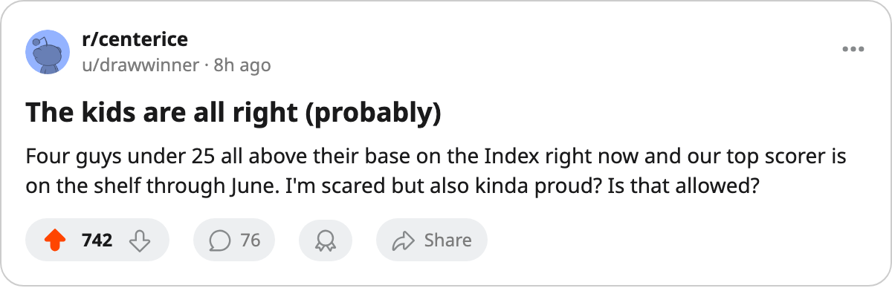

TOR
TORYoung Guns Watch: the Development Index risers who carry Toronto through June
Five Toronto players sit above their base on the Bureau's form measure, and four of them are under 25
 Sam OkaforLeafs beat reporter · Queen City Telegram
Sam OkaforLeafs beat reporter · Queen City Telegram
The Bureau's Development Index puts  Marian Gaborik99 [308] at +6, the highest single mark on the Toronto side of the ledger. He plays no more this spring. That leaves the team's current form distributed across a group that is, by the numbers, younger and less experienced than the one carrying the 133-point regular season.
Marian Gaborik99 [308] at +6, the highest single mark on the Toronto side of the ledger. He plays no more this spring. That leaves the team's current form distributed across a group that is, by the numbers, younger and less experienced than the one carrying the 133-point regular season.
Four Maple Leafs sit at +5 or higher on the Index besides Gaborik:  Barret Jackman86 [432] at +5 (80 base, 86 current, 37 points in 80 games at 29.6 minutes a night),
Barret Jackman86 [432] at +5 (80 base, 86 current, 37 points in 80 games at 29.6 minutes a night),  Rostislav Klesla87 [491] at +5 (78 base, 84 current, 30 points in 82 games),
Rostislav Klesla87 [491] at +5 (78 base, 84 current, 30 points in 82 games),  Rick Nash85 [364] at +5 (77 base, 83 current, 39 points in 69 games), and
Rick Nash85 [364] at +5 (77 base, 83 current, 39 points in 69 games), and  Brad Richards89 [832] at +4 (82 base, 87 current, 66 points in 80 games at 16.1 minutes a night). All four are under 25.
Brad Richards89 [832] at +4 (82 base, 87 current, 66 points in 80 games at 16.1 minutes a night). All four are under 25.
What the form shift means tonight
Nash moving to the 41LW slot after Gaborik's scratch is the most immediate consequence. He carries 13.1 minutes a night and 22 goals in 69 games at age 20. The first power-play unit now runs Nash on the left flank with  Mats Sundin92 [961] at centre,
Mats Sundin92 [961] at centre,  Gary Roberts87 [841] on the opposite wing, and
Gary Roberts87 [841] on the opposite wing, and  Alexander Mogilny89 [673] behind. Richards [832] and Chlup [1000815] handle the other centres.
Alexander Mogilny89 [673] behind. Richards [832] and Chlup [1000815] handle the other centres.
The +5 means the overall grade on the Book today sits five above the base the Bureau holds for each player's long-term level. Klesla at 84 is currently rated alongside  Tomas Kaberle85 [460] at 84 and
Tomas Kaberle85 [460] at 84 and  Bryan McCabe84 [637] at 84. Jackman at 86 is one point behind Gaborik's 98 and above Richards at 87.
Bryan McCabe84 [637] at 84. Jackman at 86 is one point behind Gaborik's 98 and above Richards at 87.
The fallers
Mikael Tellqvist73 [270] is the only Maple Leafs faller, at -3, with 75 overall against a 77 base. He dressed 11 games this season and sits behind  Roberto Luongo97 [593] and Maxime Ouellet86 [522] in the playoff rotation. No consequence tonight.
Roberto Luongo97 [593] and Maxime Ouellet86 [522] in the playoff rotation. No consequence tonight.
What it costs
The four risers carry combined salaries of $3.80M. Nash is on $1.20M with 1 year remaining, Klesla at $0.90M with 2 years left, Jackman at $0.70M with 3 years left, Richards at $1.00M with 1 year remaining. Richards is the one who walks in July unless the room makes a call. He has 27 goals and 39 assists in 80 games at 87 overall and a +4 form grade.
The series goes tonight at home. Gaborik is out until 2005-06-02, and the four guys above him on the Index are the ones who have to fill the gap.
